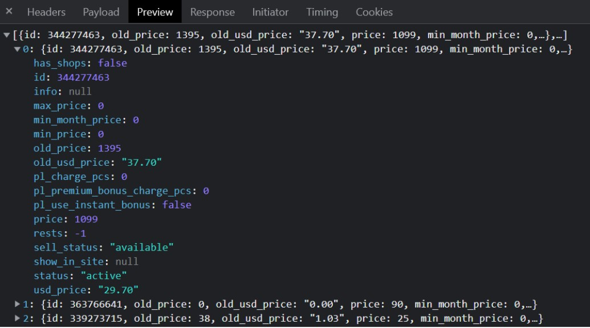

Задача 1
Описати масив об’єктів – сайтів розроблених компанією з такими властивостями
----- Властивості ------
назва компанії на час розробки (назву періодично змінюють)
власник компанії
споснсори (масив спонсорів)
* прізвище спонсора
* ім’я спонсора
* сума вкладень спонсора
рік випуску
вартість сайту
Задача 2 Розробити функцію, у яку передають об’єкт (день, місяць, рік). Визначити, який буде рік через N місяців.
Задача 3 Ось приклад відповіді з одного з сайтів (масив об’єктів з інформацією про товари) 